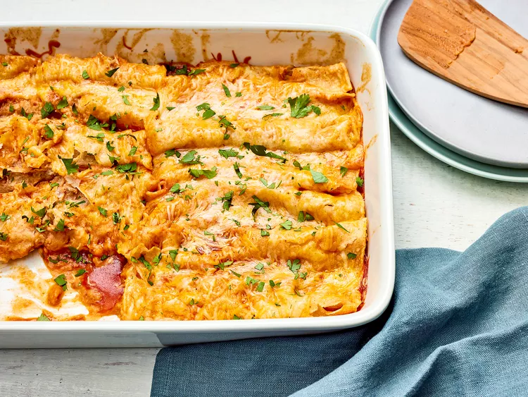

Bean Enchiladas

Description
Savor the robust flavors of these hearty Bean Enchiladas, a satisfying and nutritious meal that's perfect for any time of the day.
Packed with a savory filling of seasoned black beans, corn, and bell peppers, these enchiladas are rolled in soft tortillas and smothered in a rich and tangy enchilada sauce.
Baked to perfection, they are topped with melted cheese and garnished with fresh cilantro, adding a vibrant touch to every bite.
Easy to make and bursting with flavor, these Bean Enchiladas are an excellent choice for a wholesome and delicious dinner that will please both vegetarians and meat-lovers alike.
Ingredients
- cooking spray
- 2 (16 ounce) cans refried beans
- 2 cups shredded Mexican cheese blend, divided
- 1/2 cup chopped onion
- 12 (6 inch) corn tortillas
- 2 (10 ounce) cans red enchilada sauce
Steps
- Gather the ingredients.
- Preheat the oven to 350 degrees F (175 degrees C). Spray a 9x13-inch casserole dish with cooking spray.
- Mix refried beans, 1 1/2 cups cheese, and onion in a microwave-safe bowl. Microwave on high until cheese is melted, about 1 minute.
- Stack three tortillas on a microwave-safe plate; microwave on high until warm, about 30 seconds. Repeat to warm remaining tortillas.
- Pour enough enchilada sauce onto a small plate to cover. Quickly dip both sides of one tortilla in sauce.
- Spoon bean filling down the middle, then wrap tortilla around filling.
- Place into the prepared baking dish. Repeat to dip, fill, and roll remining tortillas.
- Pour remaining enchilada sauce over filled tortillas and sprinkle with remaining cheese. Cover the dish with aluminum foil.
- Bake in the preheated oven until sauce is bubbling and cheese is melted, 35 and 40 minutes.